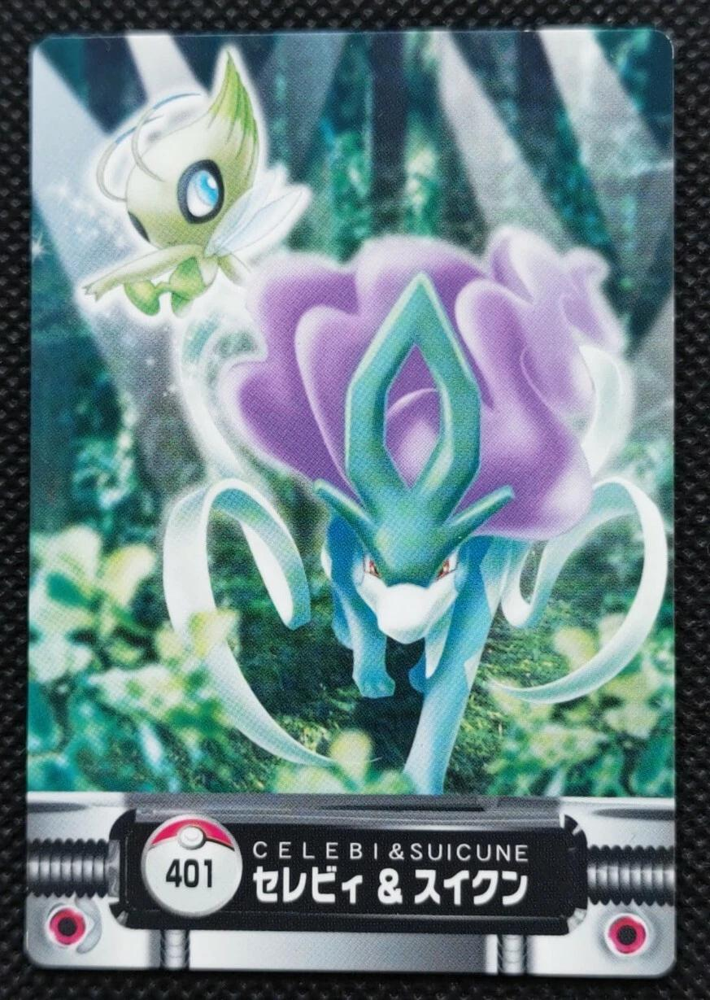
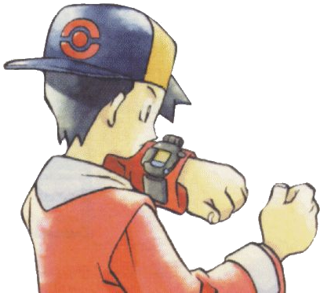
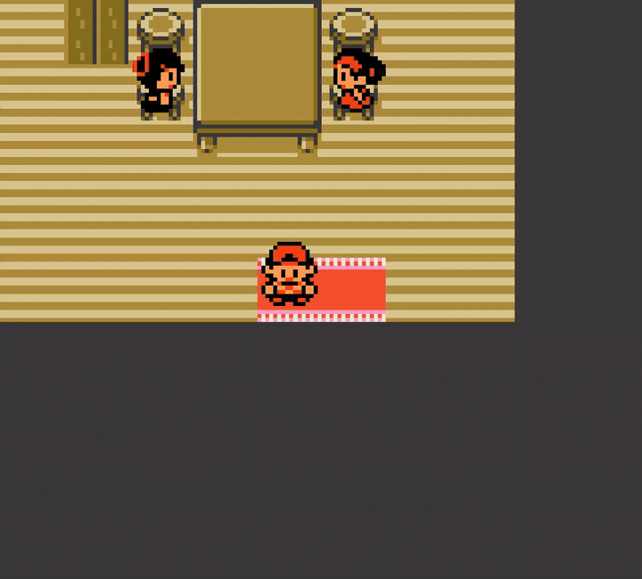

Gotta catch even more, now without a clock. A fork of Crystal Legacy that rips out every Real-Time Clock dependency and ships as an MBC5 cart, so it runs safely on flash carts, FPGA cores and emulators, without corrupting your save.

Original Crystal tells time with a battery-backed clock chip. On hardware that doesn't have one, those clock reads quietly scribble over your saved Pokémon. Timeless removes the clock entirely and hands time back to you.
Original Crystal uses an MBC3 mapper with a battery-backed Real-Time Clock. The game tells time by talking to that chip. On hardware without a real RTC, those conversations don't return garbage. They silently overwrite your saved game.
On MBC3, writing $4000 picks an SRAM bank ($00–$03) or an RTC register ($08–$0C). Same address, two jobs.
With no RTC, the mapper has no $08–$0C mode. The day-low selector $0B is treated as plain SRAM bank 3, which on this save layout begins exactly at Box 8.
Writing the clock scribbles time bytes over Box 8. Reading it loads box bytes as the current time, so the clock lurches around whenever you pick berries, battle, or open the Pokégear.
Worse: the garbage day count routinely reads as “>140 days passed,” so the time fix-up code calls SetClock to “correct” it, causing more writes, more corruption. This is the bug behind “Box 8 keeps getting wiped” and “the clock changes on its own.”
If the game never touches the RTC, it never needs the clock hardware at all. MBC5 is a strict superset of MBC3's banking (same SRAM selects, same ROM banking), but it has no RTC and no $08–$0C mode. Even a stray clock-style write has nowhere to land as a clock. The corruption path simply can't be re-enabled.
With the RTC gone, time is a software value you set that never advances on its own. Set it to night and grind for an hour, and it stays night. Day & night palettes are stable. The day counter only moves when you move it.
Morn / Day / Nite. Drives wild encounters & palettes, and time-locked NPCs like Daisy at 3 PM, Buena at night, and the bargain shop in the morning.
Mon–Sun. Sets every weekday-locked event, from Lapras on Friday to the rooftop sale, the weekly sibling NPCs, and which haircut brother is in.
No more waiting. This version makes the old day-locked rewards instant, so you almost never need to advance the day. The one exception is Kurt's GS Ball: hand it over, then advance a day in the clock screen to trigger the Celebi encounter event in Ilex Forest (it moves Kurt out of his house, the normal event flow).
All three write the same offsets, so pick whichever is convenient.
The normal “set the time” prompt at the start of the game.
Hold Down + B on the Suicune-leap title screen to re-open the vanilla clock reset.
On the Pokégear Clock card, hold SELECT + UP. Adjust time mid-route without leaving for the title.
Prefer moving time forward. The daily reset is driven by the day rolling over, not by today's date being later. If you set the clock backward past midnight, some daily flags stay “already done today” until you advance forward through a midnight again.
Almost every daily/weekly event keys off the day counter, not the clock chip, so they all still work. They just advance when you move the clock. One category got better:
Refilled every time, instantly. No gate.
Teaches a special move on any visit.
Battle as often as you like; weekday picks the opponent.
Repeat for happiness; weekday picks older vs. younger.
Grind Blue Card points. Set the clock to night.
Set Monday + morning, then buy as much as you want.
Refight at Indigo for XP/money. Re-enter the map to repeat.
Finished instantly, same visit. Hand over more right away.
Gen-1 trade link any time after meeting Bill, with no day-wait.
Daily-gift NPCs and daily swarms (Dunsparce, Yanma, fishing) keep their normal cadence. Advance the day to use them again or re-roll the swarm.
Rooftop sale, Lapras on Friday, the bitter-herb merchant, weekly siblings, the Clefairy dance. Set the matching weekday to make them appear.
Daisy's grooming (~3 PM), Buena at night, the bargain shop, and day/night encounters & palettes. Set the time of day to trigger them.
Incoming calls (rematch notices, daily-gift reminders, Buena's password) were scheduled by real elapsed clock minutes. With the clock frozen they would never fire, so we re-pointed them at the Game Boy's play-time counter, the odometer that ticks up every frame the console runs. The original timing still applies, so expect roughly 20 minutes of real play time before each call comes in. It is the same countdown Crystal always used, only measured against play time instead of the wall clock.

An internal timer ticks only in the overworld, while you walk or stand still, and pauses during battles and text. From the moment a number is registered (or the previous call ends), the game checks on a shrinking schedule, each check a 50% chance to ring:
The instant a call connects and resolves, the frame counter clears and the whole loop restarts from the 20-minute delay.
A couple of trade-offs: the Bug-Catching Contest's 20-minute timer no longer ticks down on its own (it just won't time you out), and Shuckie's one-time loan still needs a single day advanced before you can return him.
A version about controlling time deserves a nod to the one Pokémon who travels through it. Timeless tucks a shimmering green visitor into two quiet moments, a little reward for paying attention.
Celebi now floats over the title screen the whole time, drifting and bobbing beside Suicune as it leaps over the water. (It's also where you hold Down + B to reset the clock.)
On your first steps out of New Bark Town, Celebi appears and blesses you with command over time itself. From here on the clock is yours to bend. Use your power wisely.

…A voice on the wind whispers of a Pokémon that crossed time itself.▼
An emulator's cart-info view should report MBC5, RAM + battery, no RTC.